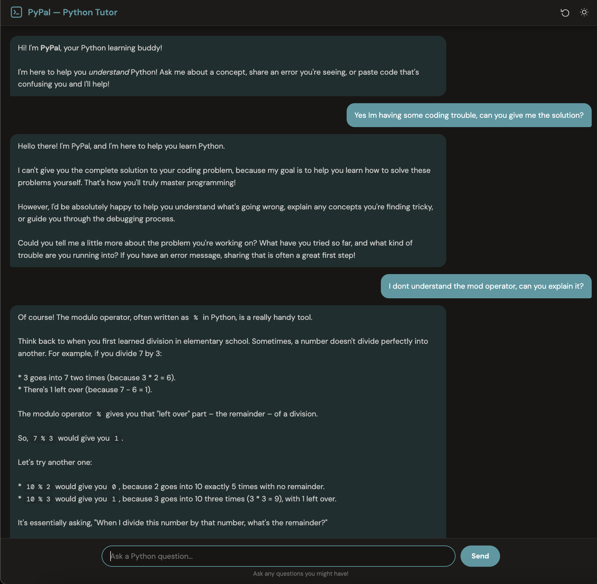
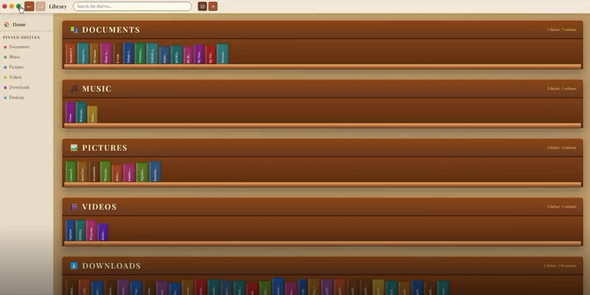
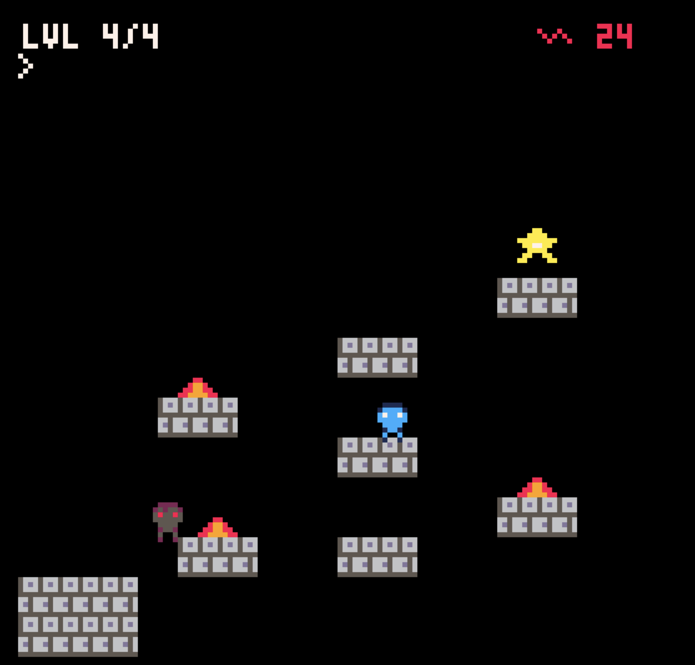
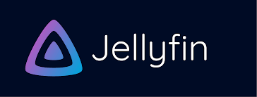

Here are some of the projects I've worked on that showcase my technical
skills and interests in AI, software development, and game design.
AI Tutoring Chatbot (PyPal)

Developed an AI-powered tutoring assistant for introductory CS students
using Python and a web-based HTML/CSS interface. Integrated the Gemini API
as the language model backend and engineered a 12-rule system prompt to
enforce a Socratic teaching style to guide students through problems with
targeted hints and code snippets rather than direct solutions.
Tech Stack: Python, HTML, CSS, Gemini API
File Browser (Bookshelf Metaphor)

Led development of a cross-platform desktop file browser that replaces
traditional files and folders with an intuitive books-and-bookshelves
metaphor. Drove iterative design from Figma prototype to working application,
using usability testing feedback to resolve navigation and discoverability
issues across multiple revisions.
Tech Stack: Node.js, Electron, Figma
Pico-8 Platformer

Led development of a 4-level platformer built around a shadow mechanic
where a delayed recording of the player's own inputs pursues them, with
difficulty scaling across levels. Redesigned progression and added a
letter-grade replay system (S–C based on death count) in response to
user testing, significantly improving mechanic learnability.
Tech Stack: Pico-8, Lua
Ultimate Tic-Tac-Toe

Engineered an interactive game featuring intelligent computer opponents
powered by the Minimax algorithm. Implemented multiple difficulty levels
to provide challenging strategic gameplay for users of all skill levels.
Tech Stack: Python
Workout Tracker Application

Designed and built a cross-platform desktop app that helps users log
exercises and visualize progress over time. Features an intuitive interface
for tracking sets, reps, and weights across workout sessions.
Tech Stack: Electron, JavaScript
Home Media Server

Architected a personal streaming solution by repurposing hardware and
deploying Jellyfin on Ubuntu Linux. Successfully configured multi-user
access for seamless media delivery across devices.
Tech Stack: Ubuntu Linux, Jellyfin